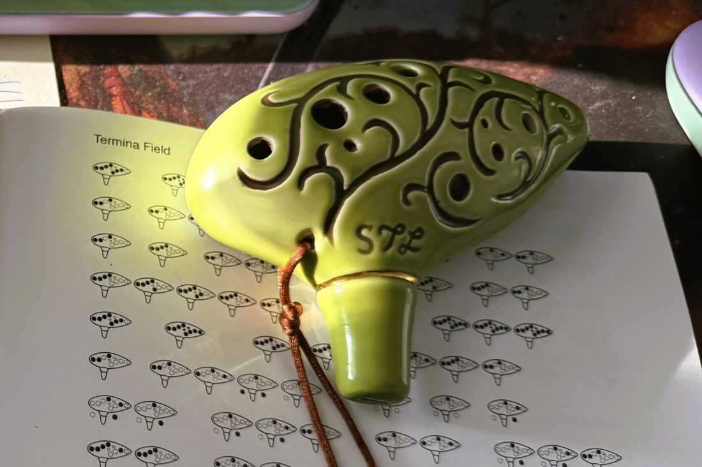

Journal / Learning the Ocarina, The Stereo Realist, and Rolleinar Lens Filter Set
Learning the Ocarina, The Stereo Realist, and Rolleinar Lens Filter Set - 09/05/2025

Ive been exploring other hobbies as of late. I went to the Bistol Ren Faire about 3~ weeks ago and bought myself an Ocarina. I thought it be fun to learn an instrument, and its a bit less complicated then the piano or the guitar. Its fun I can actually play a scale, I've memorized the song "happy birthday", and can actually read sheet music (very poorly but still)! I still need to memorize sharp/ flat notes still, and build up my confident in playing the low B and A note on it. I have two small booklets full of songs with just basic finger charts for the notes as well. I think eventually it would be nice to memorize a few more songs from the booklets :)!
The Stereo Realist
I also went to a local second hand shop in my home town. its one of those places that kinda hand select items to sell, so a bit more thought into what comes in then for example, goodwill or savors. I saw there was a retro camera, retro lightmeter, and camera filters for sale. The prices seems actually really cheap so I decided to buy it. I later found out the lens i bought and the camera are NOT compatable at all... lol. Also the way the camera works is.. interesting as well. most cameras just take one photo at a time, on one film frame at a time. This camera that i brought though is meant to take 3d images.

According to the wikipedia entry for this camera, The Stereo Realist, takes 2 photos at a time, for the purpose of creating a 3d image.
heres more info about stereo cameras from wikipedia:
"A stereo camera is a type of camera with two or more lenses with a separate image sensor or film frame for each lens. This allows the camera to simulate human binocular vision, and therefore gives it the ability to capture three-dimensional images, a process known as stereo photography"
pretty crazy huh. I actually dont really know how to operate it at all. I have used retro cameras in the past, but its been years since ive done it. I plan to go to a camera store later today and hopefully someone at the shop can help me load the film and figure out how to take photos.... Otherwiser i suppose youtube would work too. but having someone show you hands on is very helpful :). Plus I think they also develop film too so that would be cool resource to learn more about.
Rolleinar Lens Filter Set
the lens case I bought is a small leather case of different filters used for old camera called the Rolleiflex. Its kinda the bigger and insane find. I wont disclose how much I paid for it just because i dont really want anyone to know until I get it checked out. I see sets like this that are retailing for almost 1k... Im not entirely sure what do to about it. it might be too expensive for any place to want to buy it from me? i think I might also get that appraised as well from the camera store. idk if i cant see a good reason to sell the lens, I might sell the Stereo realist and get the correct camera for the lens instead. Either way I just want take 35mm photos :p!!
im excited to explore my new hobbies either way, and I plan to post about it more later for sure!!
-3maqi